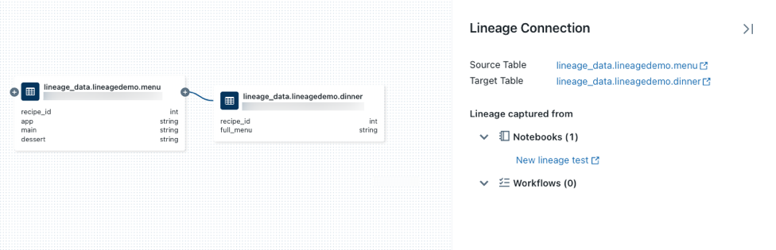
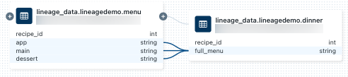
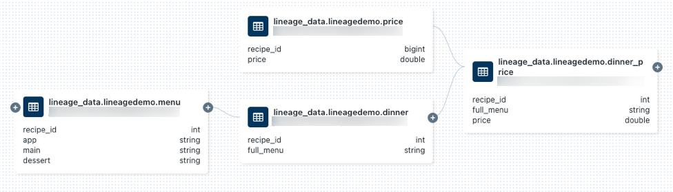

Capture and view data lineage with Unity Catalog
You can use Unity Catalog to capture runtime data lineage across queries run on Databricks. Lineage is supported for all languages and is captured down to the column level. Lineage data includes notebooks, workflows, and dashboards related to the query. Lineage can be visualized in Catalog Explorer in near real-time and retrieved with the Databricks REST API.
Note
You can also view and query lineage data using the lineage system tables (Public Preview). For more information, see Lineage system tables reference.
Lineage is aggregated across all workspaces attached to a Unity Catalog metastore. This means that lineage captured in one workspace is visible in any other workspace sharing that metastore. Users must have the correct permissions to view the lineage data. Lineage data is retained for 90 days.
This article describes visualizing lineage using Catalog Explorer and the REST API.
Requirements
The following are required to capture data lineage using Unity Catalog:
The workspace must have Unity Catalog enabled.
Tables must be registered in a Unity Catalog metastore.
Queries must use the Spark DataFrame (for example, Spark SQL functions that return a DataFrame) or Databricks SQL interfaces. For examples of Databricks SQL and PySpark queries, see Examples.
To view the lineage of a table or view, users must have the
SELECTprivilege on the table or view.To view lineage information for notebooks, workflows, or dashboards, users must have permissions on these objects as defined by the access control settings in the workspace. See Lineage permissions.
To view lineage for a Unity Catalog-enabled pipeline, you must have
CAN_VIEWpermissions on the pipeline.
You might need to update your outbound firewall rules to allow for connectivity to the Amazon Kinesis endpoint in the Databricks control plane. Typically this applies if your Databricks workspace is deployed in your own VPC or you use AWS PrivateLink within your Databricks network environment. To get the Kinesis endpoint for your workspace region, see Kinesis addresses. See also Configure a customer-managed VPC and Enable AWS PrivateLink.
Limitations
Streaming between Delta tables is supported only in Databricks Runtime 11.3 LTS or above.
Because lineage is computed on a 90-day rolling window, lineage collected more than 90 days ago is not displayed. For example, if a job or query reads data from table A and writes to table B, the link between table A and table B is displayed for only 90 days.
Workflows that use the Jobs API
runs submitrequest are unavailable when viewing lineage. Table and column level lineage is still captured when using theruns submitrequest, but the link to the run is not captured.Unity Catalog captures lineage to the column level as much as possible. However, there are some cases where column-level lineage cannot be captured.
Data lineage doesn’t capture reads on tables with column masks. See Filter sensitive table data using row filters and column masks.
If a table is renamed, lineage is not captured for the renamed table.
If you use Spark SQL dataset checkpointing, lineage is not captured. See pyspark.sql.DataFrame.checkpoint in the Apache Spark documentation.
Examples
Note
The following examples use the catalog name
lineage_dataand the schema namelineagedemo. To use a different catalog and schema, change the names used in the examples.To complete this example, you must have
CREATEandUSE SCHEMAprivileges on a schema. A metastore admin, catalog owner, or schema owner can grant these privileges. For example, to give all users in the group ‘data_engineers’ permission to create tables in thelineagedemoschema in thelineage_datacatalog, a user with one of the above privileges or roles can run the following queries:CREATE SCHEMA lineage_data.lineagedemo; GRANT USE SCHEMA, CREATE on SCHEMA lineage_data.lineagedemo to `data_engineers`;
Capture and explore lineage
To capture lineage data, use the following steps:
Go to your Databricks landing page, click
 New in the sidebar, and select Notebook from the menu.
New in the sidebar, and select Notebook from the menu.Enter a name for the notebook and select SQL in Default Language.
In Cluster, select a cluster with access to Unity Catalog.
Click Create.
In the first notebook cell, enter the following queries:
CREATE TABLE IF NOT EXISTS lineage_data.lineagedemo.menu ( recipe_id INT, app string, main string, dessert string ); INSERT INTO lineage_data.lineagedemo.menu (recipe_id, app, main, dessert) VALUES (1,"Ceviche", "Tacos", "Flan"), (2,"Tomato Soup", "Souffle", "Creme Brulee"), (3,"Chips","Grilled Cheese","Cheesecake"); CREATE TABLE lineage_data.lineagedemo.dinner AS SELECT recipe_id, concat(app," + ", main," + ",dessert) AS full_menu FROM lineage_data.lineagedemo.menu
To run the queries, click in the cell and press shift+enter or click
 and select Run Cell.
and select Run Cell.
To use Catalog Explorer to view the lineage generated by these queries, use the following steps:
In the Search box in the top bar of the Databricks workspace, enter
lineage_data.lineagedemo.dinnerand click Search lineage_data.lineagedemo.dinner in Databricks.Under Tables, click the
dinnertable.Select the Lineage tab. The lineage panel appears and displays related tables (for this example it’s the
menutable).To view an interactive graph of the data lineage, click See Lineage Graph. By default, one level is displayed in the graph. You can click on the icon on a node to reveal more connections if they are available.
Click on an arrow connecting nodes in the lineage graph to open the Lineage connection panel. The Lineage connection panel shows details about the connection, including source and target tables, notebooks, and workflows.
To show the notebook associated with the
dinnertable, select the notebook in the Lineage connection panel or close the lineage graph and click Notebooks. To open the notebook in a new tab, click on the notebook name.To view the column-level lineage, click on a column in the graph to show links to related columns. For example, clicking on the ‘full_menu’ column shows the upstream columns the column was derived from:

To demonstrate creating and viewing lineage with a different language, for example, Python, use the following steps:
Open the notebook you created previously, create a new cell, and enter the following Python code:
%python from pyspark.sql.functions import rand, round df = spark.range(3).withColumn("price", round(10*rand(seed=42),2)).withColumnRenamed("id","recipe_id") df.write.mode("overwrite").saveAsTable("lineage_data.lineagedemo.price") dinner = spark.read.table("lineage_data.lineagedemo.dinner") price = spark.read.table("lineage_data.lineagedemo.price") dinner_price = dinner.join(price, on="recipe_id") dinner_price.write.mode("overwrite").saveAsTable("lineage_data.lineagedemo.dinner_price")
Run the cell by clicking in the cell and pressing shift+enter or clicking
and selecting Run Cell.In the Search box in the top bar of the Databricks workspace, enter
lineage_data.lineagedemo.priceand click Search lineage_data.lineagedemo.price in Databricks.Under Tables, click the
pricetable.Select the Lineage tab and click See Lineage Graph. Click on the icons to explore the data lineage generated by the SQL and Python queries.
Click on an arrow connecting nodes in the lineage graph to open the Lineage connection panel. The Lineage connection panel shows details about the connection, including source and target tables, notebooks, and workflows.
Capture and view workflow lineage
Lineage is also captured for any workflow that reads or writes to Unity Catalog. To demonstrate viewing lineage for a Databricks workflow, use the following steps:
Click
New in the sidebar and select Notebook from the menu.Enter a name for the notebook and select SQL in Default Language.
Click Create.
In the first notebook cell, enter the following query:
SELECT * FROM lineage_data.lineagedemo.menu
Click Schedule in the top bar. In the schedule dialog, select Manual, select a cluster with access to Unity Catalog, and click Create.
Click Run now.
In the Search box in the top bar of the Databricks workspace, enter
lineage_data.lineagedemo.menuand click Search lineage_data.lineagedemo.menu in Databricks.Under Tables View all tables, click the
menutable.Select the Lineage tab, click Workflows, and select the Downstream tab. The job name appears under Job Name as a consumer of the
menutable.
Capture and view dashboard lineage
To demonstrate viewing lineage for a SQL dashboard, use the following steps:
Go to your Databricks landing page and open the Catalog Explorer by clicking Catalog in the sidebar.
Click on the catalog name, click lineagedemo, and select the
menutable. You can also use the Search tables text box in the top bar to search for themenutable.Click Actions > Create a quick dashboard.
Select columns to add to the dashboard and click Create.
In the Search box in the top bar of the Databricks workspace, enter
lineage_data.lineagedemo.menuand click Search lineage_data.lineagedemo.menu in Databricks.Under Tables View all tables, click the
menutable.Select the Lineage tab and click Dashboards. The dashboard name appears under Dashboard Name as a consumer of the menu table.
Lineage permissions
Lineage graphs share the same permission model as Unity Catalog. If a user does not have the SELECT privilege on a table, they will not be able to explore the lineage. Additionally, users can only see notebooks, workflows, and dashboards that they have permission to view. For example, if you run the following commands for a non-admin user userA:
GRANT USE SCHEMA on lineage_data.lineagedemo to `userA@company.com`;
GRANT SELECT on lineage_data.lineagedemo.menu to `userA@company.com`;
When userA views the lineage graph for the lineage_data.lineagedemo.menu table, they will see the menu table, but will not be able to see information about associated tables, for example, the downstream lineage_data.lineagedemo.dinner table. The dinner table is displayed as a masked node in the display to userA, and userA cannot expand the graph to reveal downstream tables from tables they do not have permission to access.
For more information about managing access to securable objects in Unity Catalog, see Manage privileges in Unity Catalog. For more information about managing access to workspace objects like notebooks, workflows, and dashboards, see Access control overview.
Delete lineage data
Warning
The following instructions delete all objects stored in Unity Catalog. Use these instructions only if necessary. For example, to meet compliance requirements.
To delete lineage data, you must delete the metastore managing the Unity Catalog objects. For more information about deleting the metastore, see Delete a metastore. Data will be deleted within 90 days.
Data lineage API
The data lineage API allows you to retrieve table and column lineage.
Important
To access Databricks REST APIs, you must authenticate.
Retrieve table lineage
This example retrieves lineage data for the dinner table.
Request
curl --netrc -X GET \
-H 'Content-Type: application/json' \
https://<databricks-instance/api/2.0/lineage-tracking/table-lineage \
-d '{"table_name": "lineage_data.lineagedemo.dinner", "include_entity_lineage": true}}'
Replace <get-workspace-instance>.
This example uses a .netrc file.
Response
{
"upstreams": [
{
"tableInfo": {
"name": "menu",
"catalog_name": "lineage_data",
"schema_name": "lineagedemo",
"table_type": "TABLE"
},
"notebookInfos": [
{
"workspace_id": 4169371664718798,
"notebook_id": 1111169262439324
}
]
}
],
"downstreams": [
{
"notebookInfos": [
{
"workspace_id": 4169371664718798,
"notebook_id": 1111169262439324
}
]
},
{
"tableInfo": {
"name": "dinner_price",
"catalog_name": "lineage_data",
"schema_name": "lineagedemo",
"table_type": "TABLE"
},
"notebookInfos": [
{
"workspace_id": 4169371664718798,
"notebook_id": 1111169262439324
}
]
}
]
}
Retrieve column lineage
This example retrieves column data for the dinner table.
Request
curl --netrc -X GET \
-H 'Content-Type: application/json' \
https://<databricks-instance/api/2.0/lineage-tracking/column-lineage \
-d '{"table_name": "lineage_data.lineagedemo.dinner", "column_name": "dessert"}}'
Replace <get-workspace-instance>.
This example uses a .netrc file.
Response
{
"upstream_cols": [
{
"name": "dessert",
"catalog_name": "lineage_data",
"schema_name": "lineagedemo",
"table_name": "menu",
"table_type": "TABLE"
},
{
"name": "main",
"catalog_name": "lineage_data",
"schema_name": "lineagedemo",
"table_name": "menu",
"table_type": "TABLE"
},
{
"name": "app",
"catalog_name": "lineage_data",
"schema_name": "lineagedemo",
"table_name": "menu",
"table_type": "TABLE"
}
],
"downstream_cols": [
{
"name": "full_menu",
"catalog_name": "lineage_data",
"schema_name": "lineagedemo",
"table_name": "dinner_price",
"table_type": "TABLE"
}
]
}